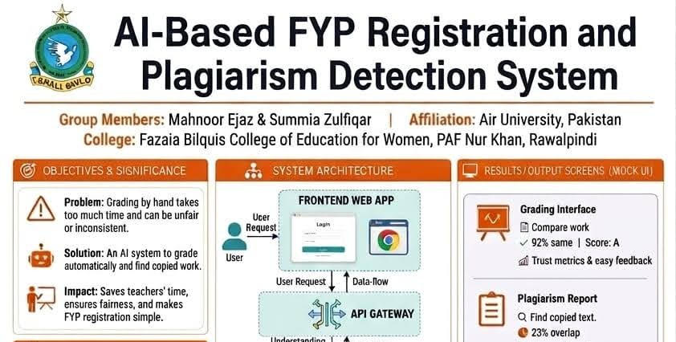
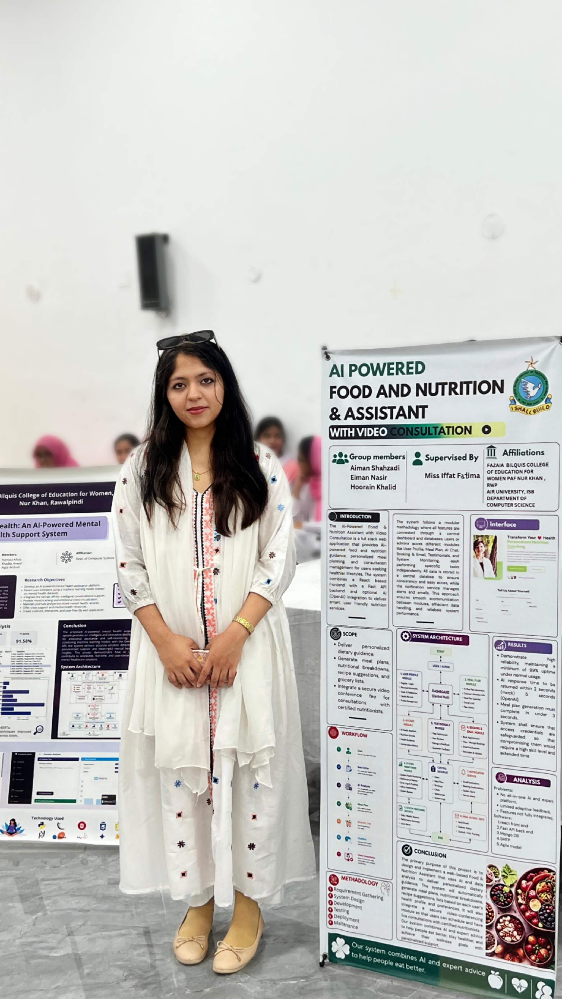
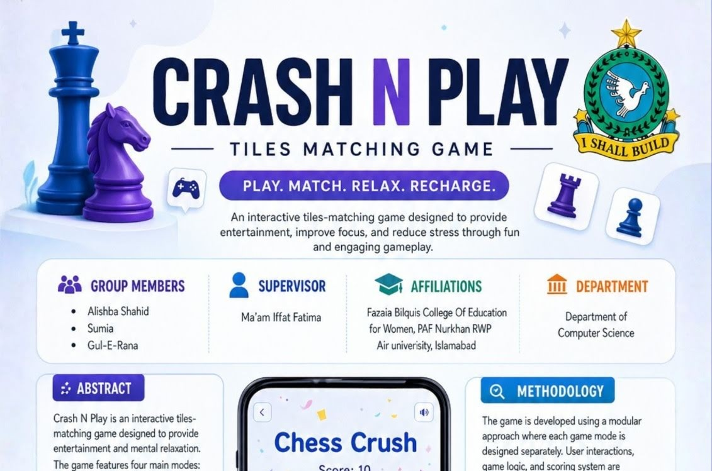
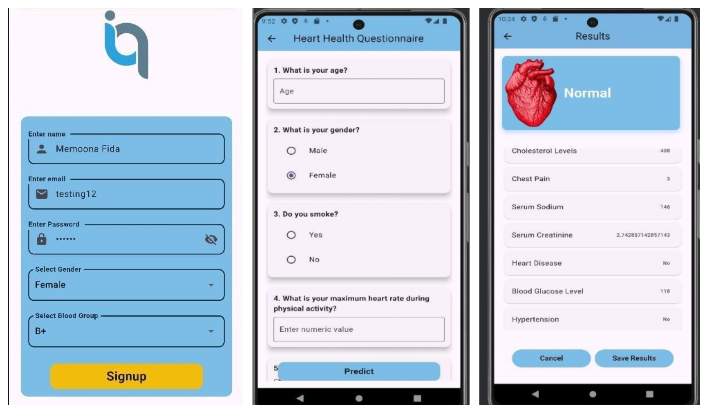
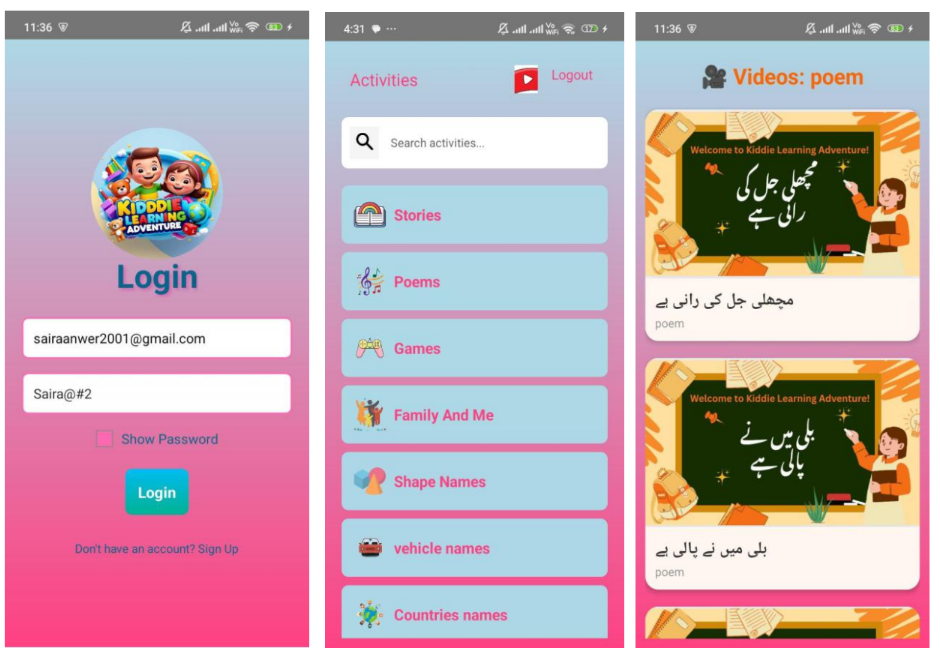

Projects Supervised
As a lecturer and project mentor at Fazaia Bilquis College, I guide students through full lifecycle development of software, mobile apps, and machine learning pipelines.

FYP Registration & Plagiarism Detection
Spring 2026An intelligent, web-based system that automates the registration, management, and proposal assessment of Final Year Projects. Features automated duplicate check and proposal similarity check powered by S-BERT embeddings.

AI Food & Nutrition Assistant
Spring 2026Integrated solution generating customized, calorie-balanced meal plans using specialized NLP algorithms. Includes live video consulting setups connecting students/staff to certified nutritionists.

Crash N Play Game
Spring 2026A responsive, fast-paced tile matching game compiled with HTML5 Canvas and advanced logic. Supports multiple interactive game modes including Emoji Crush and Chess Crush.

Heart IQ Android App
Spring 2025Machine-learning driven Android application targeting cardiovascular risk factors. Evaluates several classifiers (Random Forest, SVM, KNN) on medical data. Features a customized Random Forest model achieving 86% accuracy.

Kiddie Learning App
Spring 2025Interactive Android application teaching basic literacy to toddlers through colorful, animated vector animations and embedded educational YouTube content safely filtered via API constraints.